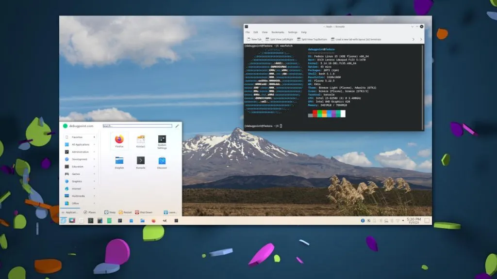
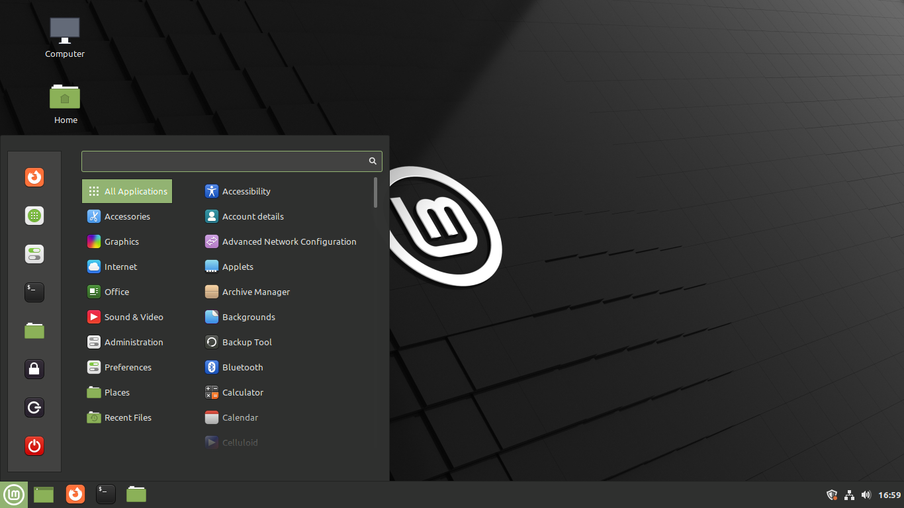

about me
Yash Lakhtariya
A computer science student having interest in Free and Open Source Projects like Linux, Android and have tried the most popular linux distros. Good at various color combinations in UI designing and styling UI elements.

Garuda Linux
Garuda Linux is my personal favourite. It is based on the best Arch Linux. Being close to arch, Garuda Linux is "bleeding edge" software but with GUI tools for almost anything. It is performance oriented distro specially for Gaming. Built with modern BTRFS file system, it has BTRFS assistant to create and restore snapshots like timeshift to recover the system in case of system bricks. Being highly customizable it is easier to modify kernels, drivers, themes, etc. with graphical tools. It has Pacman and Pamac GUI package managers. It comes with many flavours of Desktop Environments like GNOME, KDE Plasma(Dragonized Edition), XFCE, LXQT, Cinnamon, Mate and flavours of Window Managers like i3, BSPWM, Sway, Qtile. It is very helpful for beginners because of its having GUI options for command-line functionalities.

Ubuntu
Ubuntu is one of the most popular and oldest Linux distros. It has its own identity inspite of being based on Debian. It has the best software support with its own repository with thousands of applications. Ubuntu is beginner friendly distro with easy GUI and GNOME desktop environment. It supports many filesystems like ext4, btrfs, ntfs, ext3, ext2,etc. Ubuntu has apt package manager and Snap Store GUI for downloading applications. It is recommended for desktop users and newcomers in Linux coming from Windows or Mac OS. It has LTS (Long Term Support) versions which has release cycle of about 2 years and regular version with release cycle of about 9 months. Due to its popularity, it comes preinstalled in many devices.

Fedora Workstation
Fedora is a mainstream linux distro and is sponsored by Red Hat primarily. It pushes the limits of Linux. Fedora comes with dnf package manager and GNOME desktop environment by default (of course Fedora Spins are available for different DE's). Red Hat Enterprise Linux is a derivative of Fedora with some changes like yum package manager, patches for enterprise use, etc. It has special Developer Portal for developers. No less a figure than Linus Torvalds uses Fedora for his development work. Need I say more?

Linux Mint
Linux Mint is the most popular operating system of last few years for desktop and laptop computers. It is based on both Debian and Ubuntu. Linux Mint is designed to work 'out of the box' and comes fully equipped with the apps most people need like LibreOffice, Gimp, Blender, etc. It comes with custom desktop environment named Cinnamon which is easy to use and based on GNOME-2. It is faster with lower resources and that's why devices with older hardware are recommended to use Linux Mint.